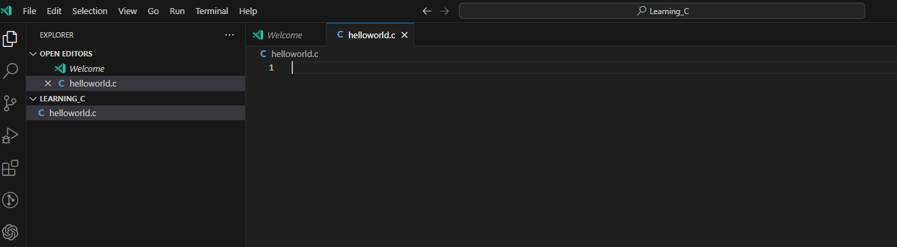
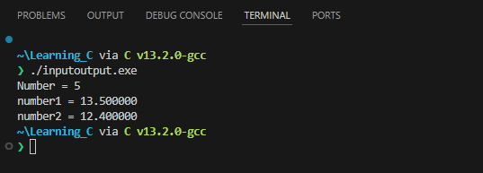
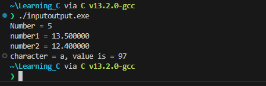
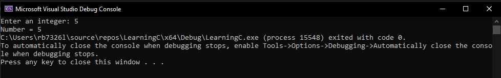
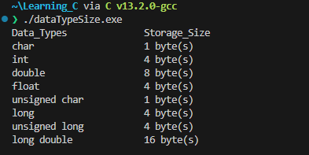

Lab 1: Learning C
We will be doing this lab inconjuction with the C lecture. Key concepts will be explained and you will put into practice.
So let's make our first program.
1. Create a Project in Visual Studio:
-
Open Visual Studio and create a new C project.
-
Name the project
Learning_C. -
Create a new source file named
helloworld.c.#include <stdio.h> // we need this library to get access to the input and out put methods for printing to terminal int main() { printf("Hello World\n"); // lets say hello, where it all began... printf("Goodbye World\n"); // this seems fitting as the program will close after this. return 0; // returns 0 to the int of main() and terminate the program }Some explanation about the above code:
-
All code gets executed inside of
main(), -
For the program to terminate the
main()has to have a returnable value,int, -
The keyword at the end of the
main()isreturn, this is will return the value preceeding it, -
A
0execute means no errors. -
Similar to
C#to use librariescprograms import with the#includekeyword instead ofusing. -
The included library is the standard input out header,
stdio.h. -
By including this header file we have access to the
printf()function that enables us to return information to the terminal in string format.
Now we are going to compile the code so that we have an executable file that can be run from the terminal:
-
Click for Expected Output

Congratulations, you used the programming language of the gods!
2. Data Type: Printing Integer
-
Now we are going to modifiy the script again
$ vim inputoutput.cto look like below:#include <stdio.h> int main() { int testInteger = 5; printf("Number = %d", testInteger); return 0; } -
Remeber to use the vim shortcuts from before to edit, write and quit.
-
Run the script again...

- We use
%dformat specifier to printinttypes. Here, the%dinside the quotations will be replaced by the value oftestInteger.
- We use
3. Data Types: Printing Float and Double
-
Modify the same file again to look like below:
#include <stdio.h> int main() { float number1 = 13.5; double number2 = 12.4; printf("number1 = %f\n", number1); printf("number2 = %lf", number2); return 0; } -
Run it

- To print float, we use
%fformat specifier. Similarly, we use%lfto print double values.
- To print float, we use
4. Data Types: Printing Characters
-
Modify the same file again to look like below:
#include <stdio.h> int main() { char chr = 'a'; printf("character = %c, value is = %d", chr, chr); return 0; } -
Run the program again and you should see the following ouput:

- To print
char, we use%cformat specifier. - Every
charhas a numerial representation in ASCII, using%dwe can get the numerical value.
- To print
5. User Input in C
In C programming, scanf_s() is one of the commonly used function to take input from the user. The scanf_s() function reads formatted input from the standard input such as keyboards.
-
Again we will modify the program to look like the code below:
#include <stdio.h> int main() { int testInteger; printf("Enter an integer: "); scanf_s("%d", &testInteger); printf("Number = %d",testInteger); return 0; } -
Run the program to get the following output, respond to the prompt and type in a number: 
- Here, we have used
%dformat specifier inside thescanf_s()function to takeintinput from the user. When the user enters an integer, it is stored in thetestIntegervariable.
Notice, that we have used
&testIntegerinsidescanf_s(). It is because&testIntegergets the address oftestInteger, and the value entered by the user is stored in that address. We will cover addressing and pointers at a later date. - Here, we have used
6. Format Specifiers
Here is a table of possible format specifiers for input and output:
| Data Type | Format Specifier |
|---|---|
int | %d |
char | %c |
float | %f |
double | %lf |
short int | %hd |
unsigned int | %u |
long int | %li |
long long int | %lli |
unsigned long int | %lu |
unsigned long long int | %llu |
signed char | %c |
unsigned char | %c |
long double | %Lf |
7. Data Types
-
We are going to write a program that returns the size of each data type availabe in
c, modify the program to look like below:#include<stdio.h> int main(){ printf("Data_Types\t\tStorage_Size \n"); printf("char\t\t\t%d byte(s) \n", sizeof(char)); printf("int\t\t\t%d byte(s) \n", sizeof(int)); printf("double\t\t\t%d byte(s) \n", sizeof(double)); printf("float\t\t\t%d byte(s) \n", sizeof(float)); printf("unsigned char\t\t%ld byte(s) \n", sizeof(unsigned char)); printf("long\t\t\t%d byte(s) \n", sizeof(long)); printf("unsigned long\t\t%ld byte(s) \n", sizeof(unsigned long)); printf("long double\t\t%ld byte(s) \n", sizeof(long double)); return 0; } -
Run program to see the data types and there available sizes in bytes: 